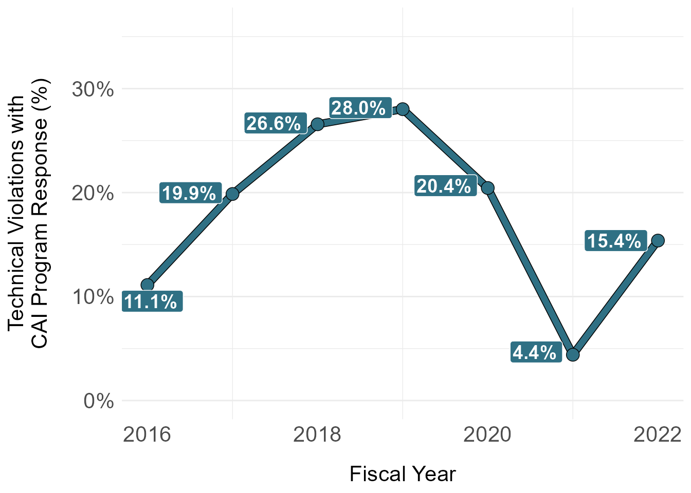
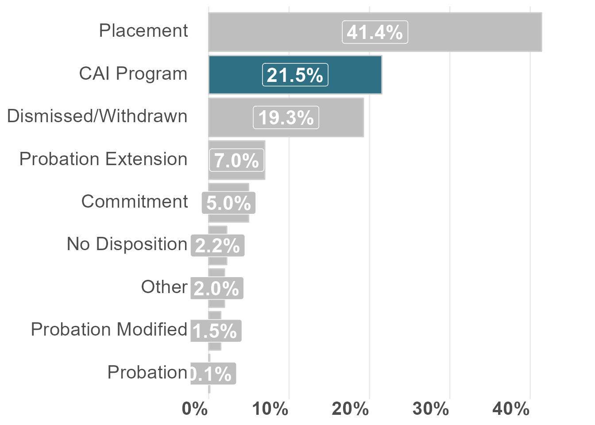
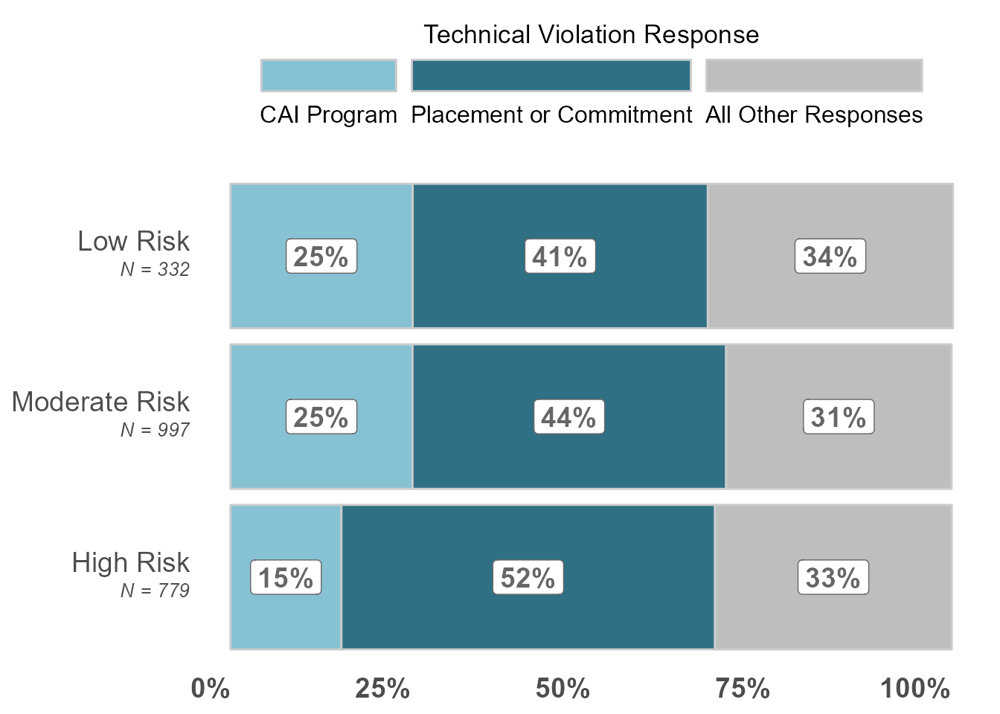

| FY of Violation | All Technical Violations (N) | 21 Day Residential Program (row %) | Probation (row %) | Probation Extension (row %) | Probation Modified (row %) | Placement (row %) | Commitment (row %) | Other (row %) | Dismissed/Withdrawn (row %) | No Disposition (row %) | Missing Disposition Data (row %) |
|---|---|---|---|---|---|---|---|---|---|---|---|
| 2016 | 90 | 11.1% | 0.0% | 7.8% | 0.0% | 68.9% | 0.0% | 2.2% | 10.0% | 0.0% | 0.0% |
| 2017 | 292 | 19.9% | 0.3% | 10.3% | 2.1% | 54.1% | 2.7% | 1.4% | 11.0% | 1.0% | 0.3% |
| 2018 | 542 | 26.6% | 0.2% | 6.6% | 1.5% | 39.9% | 4.4% | 2.0% | 18.8% | 1.1% | 0.6% |
| 2019 | 521 | 28.0% | 0.4% | 5.2% | 1.3% | 38.2% | 5.4% | 2.3% | 18.4% | 1.9% | 0.6% |
| 2020 | 318 | 20.4% | 0.6% | 10.4% | 1.9% | 25.2% | 7.9% | 3.1% | 27.4% | 5.7% | 0.3% |
| 2021 | 159 | 4.4% | 0.0% | 3.1% | 3.8% | 44.0% | 5.7% | 1.3% | 34.6% | 3.1% | 0.0% |
| 2022 | 221 | 15.4% | 0.5% | 6.8% | 1.4% | 46.6% | 7.2% | 2.3% | 15.4% | 4.5% | 0.0% |
| Overall | 2,143 | 21.5% | 0.2% | 7.0% | 1.5% | 41.3% | 5.0% | 2.0% | 19.2% | 2.3% | 0.4% |
What happens to youth as the result of a technical violation?
What happens to youth as the result of a technical violation?
1.
Of youth who receive a technical violation as a primary offense, what proportion are placed in a residential facility; detention; committed to state custody? How does this vary across race/ethnicity, sex, and risk level?
Of youth who receive a technical violation as a primary offense, what proportion receive an extended supervision episode?
2.
- What is the average length of time a supervision episode is extended as the result of a technical violation? How does this vary across race/ethnicity, sex, and risk level?
3.
- In Dallas, probation can file a violation to get a kid into a 21 Day residential program. The violation does not go to the prosecutor. If the kid is successful in the placement, then the department dismisses the violation. How often does this happen?
Double check following coding/grouping of violation dispositions with team:
“No Disposition” = “ADJUDICATED - NO DISPOSITION”
“Probation” = “ADJUDICATED PLACED ON PROBATION”, “CONSOLIDATED MULTIPLE CHARGES - ONE DISPOSITION (PROBATION)”)
“21 Day Residential Program” = “DISMISSED OR WITHDRAWN BY DEPARTMENT” AND placement type = “Emergency Shelter” AND placement offense = “VOP” AND placement end date = violation disposition date
“Dismissed/Withdrawn” = “COMPLAINT DISMISSED BY COURT”, “DISMISSED WITHOUT PROSECUTION”,“DISMISSED WITHOUT PROSECUTION - PA”, “NO CASE FILED BY DA NO JD ACTION”, “NO INTAKE, NO PROBABLE CAUSE - DECLINED BY PROSECUTOR”, “NO INTAKE, NO PROBABLE CAUSE - PROBATION DEPARTMENT”, “NO INTAKE, PROBABLE CAUSE - PROSECUTOR”, “NONSUIT”, “NONSUIT (PA)”,“NO INTAKE, DISPOSED BY INTAKE”, “DISMISSED OR WITHDRAWN BY DEPARTMENT” (non-21 day program instances only)
“Other” = “CONSOLIDATED IN ANOTHER CASE/REFERRAL”, “CONSOLIDATED BY DEPARTMENT”, “FILED AS A MOTION TO MODIFY”,“FILED AS MOTION TO MODIFY”, “MOD/VOP Disposed by Intake (PA)”,“TAKEN INTO CONSIDERATION”,“SUPERVISORY CAUTION BY DEPARTMENT”, “TAKEN INTO CONSIDERATION (PA Complaint)”, “TRANSFER OF DISPOSITION BY COURT”
“Placement” = “CONSOLIDATED MULTIPLE CHARGES - ONE DISPOSITION (PLACEMENT)”, “MODIFICATION PLACEMENT”,“MODIFIED TO PLACEMENT-DETERMINATE SENTENCE PROB”, “PROBATION/PLACEMENT”
“Commitment” = “PROB REVOKED-DETERMINATE COMMITMENT”,“PROB REVOKED-INDETERMINATE COMMITMENT”,“TJJD DETERMINATE COMMITMENT”,“TJJD INDETERMINATE COMMITMENT”
“Probation Extension” = “PROBATION EXTENDED”
“Probation Modified” = “PROBATION MODIFIED”
1. Technical Violation Disposition Outcomes
Table 1. By FY: Technical Violation Disposition Outcomes
NOTE: The base sample and denominator for this analysis is all filed violations where the most serious violation was a technical violation.
### unique complaints split out
df_complaints_youth_intake_decision_offense_viz_overall_count <- df_technical_violations_dispo_clean_demo %>%
# dplyr::filter(dai!="Court Order Violation") |>
dplyr::summarise(`2016` = n_distinct(youth_violation_id[violation_filed_date_fy==2016]),
`2017` = n_distinct(youth_violation_id[violation_filed_date_fy==2017]),
`2018` = n_distinct(youth_violation_id[violation_filed_date_fy==2018]),
`2019` = n_distinct(youth_violation_id[violation_filed_date_fy==2019]),
`2020` = n_distinct(youth_violation_id[violation_filed_date_fy==2020]),
`2021` = n_distinct(youth_violation_id[violation_filed_date_fy==2021]),
`2022` = n_distinct(youth_violation_id[violation_filed_date_fy==2022])) |>
mutate(group = "counts") |>
pivot_longer(!group, names_to = "violation_filed_date_fy", values_to = "count") |>
dplyr::select(-group) |>
mutate(violation_filed_date_fy = as.numeric(violation_filed_date_fy))mutate: new variable 'group' (character) with one unique value and 0% NApivot_longer: reorganized (2016, 2017, 2018, 2019, 2020, …) into (violation_filed_date_fy, count) [was 1x8, now 7x3]mutate: converted 'violation_filed_date_fy' from character to double (0 new NA)### unique violation grouped
df_technical_violations_per_year_viz <- df_technical_violations_dispo_clean_demo %>%
dplyr::group_by(violation_filed_date_fy) %>%
dplyr::summarise(`21 Day CAI Program` = n_distinct(youth_violation_id[violation_dispo_clean=="21 Day Residential Program"])/n_distinct(youth_violation_id)
# ,
# `All Other Outcomes` = n_distinct(youth_violation_id[violation_dispo_clean!="21 Day Residential Program"])/n_distinct(youth_violation_id)
) |>
ungroup() %>%
pivot_longer(!violation_filed_date_fy, names_to = "complaint_type", values_to = "percent") |>
mutate(group = "dallas")ungroup: no grouping variablespivot_longer: reorganized (21 Day CAI Program) into (complaint_type, percent) [was 7x2, now 7x3]mutate: new variable 'group' (character) with one unique value and 0% NA # arrange(desc(percent)) |>
# left_join(df_complaints_youth_intake_decision_offense_viz_overall_count,
# by = "violation_filed_date_fy") %>%
# mutate(
# violation_filed_date_fy_n = paste0(
# "<span style = 'font-size:14pt'>", violation_filed_date_fy, "</span><br>",
# "<span style = 'font-size:10pt'><em>", "N = ", scales::comma(count, 1), "</em></span>")) |>
# mutate(offense_type = factor(complaint_type,
# levels = c("21 Day CAI Program",
# "All Other Outcomes"))) |>
# arrange(offense_type)
###geom_line
ggplot(data = df_technical_violations_per_year_viz, aes(x = violation_filed_date_fy, y = percent
,
color = group,
group = group
)) +
geom_line(color = "black", size = 2.75) +
geom_line(size = 2.2) +
geom_point(color = "black", size = 4) +
geom_point(size = 3.5) +
labs(x = "Fiscal Year", y = "Technical Violations with\nCAI Program Response (%)", color=NULL, title = NULL, caption = NULL) +
scale_y_continuous(label=scales::percent_format(accuracy=1),
limits = c(min(0),
max(.36))) +
theme(legend.position = "none",
legend.title = element_text(hjust = 0.5,size = 13),
legend.text = element_text(size = 13),
panel.grid.major.x = element_blank(),
plot.title = element_text( hjust = 0.5),
axis.text.x = element_text(size = 16),
axis.text.y = element_text(size = 16),
axis.title.x = element_text(size = 16,margin = margin(t = 15)),
axis.title.y = element_text(size = 16,margin = margin(r = 15)),
plot.subtitle = element_text(hjust = 0.5),
plot.caption = element_text(hjust = 0.5)) +
scale_color_manual(values = c("#2F7084")) +
scale_fill_manual(values = c("#2F7084")) +
geom_label_repel(aes(label = scales::percent(as.numeric(percent),
accuracy = 0.1),
fill = group
),
hjust = .1,
label.padding = 0.2,
box.padding = 0.2,
color = "white",
size = 5,
segment.color = NA,
fontface = "bold",
na.rm = TRUE,
show.legend = FALSE)Warning: Using `size` aesthetic for lines was deprecated in ggplot2 3.4.0.
ℹ Please use `linewidth` instead.
# ### plot
# ggplot(data = df_technical_violations_per_year_viz, aes(y = percent, x = violation_filed_date_fy_n, fill = forcats::fct_rev(offense_type))) +
# geom_bar(stat = "identity", color = "gray80") +
# scale_x_discrete(limits = rev) +
# scale_y_continuous(labels = scales::percent) +
# geom_label(
# aes(
# y = percent,
# label = scales::percent(percent,
# accuracy = 1),
# fontface = "bold"
# ),
# position = position_stack(vjust = .5),
# size = 5,
# fill = "white",
# colour = "gray40",
# show.legend = FALSE
# ) +
# scale_fill_manual(values = c("gray","#2F7084")) +
# guides(fill = guide_legend(reverse = TRUE,
# title.position = "top",
# label.position = "bottom",
# keywidth = 3,
# nrow = 1)) +
# labs(x = NULL, y = NULL,
# fill = "Technical Violation Response",
# caption = NULL,
# title = NULL,
# subtitle = NULL) +
# theme(legend.position = "top",
# legend.title = element_text(hjust = 0.5,size = 13),
# legend.text = element_text(size = 12),
# plot.title = element_text(hjust = 0.5),
# plot.subtitle = element_text(hjust = 0.5),
# plot.caption = element_text(hjust = 0.5),
# # axis.text.x = element_markdown(),
# axis.text.y = element_markdown(size=14),
# axis.text.x = element_text(face = "bold", hjust = 1, size = 14),
# axis.ticks.length = unit(0, "cm"),
# panel.grid.major.y = element_blank(),
# panel.grid.major.x = element_blank(),
# panel.grid.minor = element_blank()) +
# coord_flip()
### write out
ggsave(
filename = file.path(sp_viz_output_path, "slide_34_technical_violation_dispositions_cai_highlight_option_1_line.png"),
plot = last_plot(),
device = ragg::agg_png,
dpi = 300,
height = 5.25,
width = 10,
units = "in",
bg = "transparent"
)### overall
df_technical_violations_overall <- df_technical_violations_dispo_clean_demo %>%
filter(violation_filed_date_fy>=2016,
!is.na(violation_dispo_clean)==TRUE) %>%
dplyr::summarise(`CAI Program` = n_distinct(youth_violation_id[violation_dispo_clean=="21 Day Residential Program"])/n_distinct(youth_violation_id),
`Probation` = n_distinct(youth_violation_id[violation_dispo_clean=="Probation"])/n_distinct(youth_violation_id),
`Probation Extension` = n_distinct(youth_violation_id[violation_dispo_clean=="Probation Extension"])/n_distinct(youth_violation_id),
`Probation Modified` = n_distinct(youth_violation_id[violation_dispo_clean=="Probation Modified"])/n_distinct(youth_violation_id),
`Placement` = n_distinct(youth_violation_id[violation_dispo_clean=="Placement"])/n_distinct(youth_violation_id),
`Commitment` = n_distinct(youth_violation_id[violation_dispo_clean=="Commitment"])/n_distinct(youth_violation_id),
`Other` = n_distinct(youth_violation_id[violation_dispo_clean=="Other"])/n_distinct(youth_violation_id),
`Dismissed/Withdrawn` = n_distinct(youth_violation_id[violation_dispo_clean=="Dismissed/Withdrawn"])/n_distinct(youth_violation_id),
`No Disposition` = n_distinct(youth_violation_id[violation_dispo_clean=="No Disposition"])/n_distinct(youth_violation_id)) |>
mutate(group = "dallas") |>
pivot_longer(!group, names_to = "complaint_type", values_to = "percent") filter: removed 8 rows (<1%), 2,135 rows remainingmutate: new variable 'group' (character) with one unique value and 0% NApivot_longer: reorganized (CAI Program, Probation, Probation Extension, Probation Modified, Placement, …) into (complaint_type, percent) [was 1x10, now 9x3]### plot
### bar plot
ggplot(data = df_technical_violations_overall,
aes(x = reorder(complaint_type,-percent),
y = percent,
fill = complaint_type)) +
geom_bar(stat = "identity",
color = "gray80") +
scale_x_discrete(limits = rev) +
scale_y_continuous(labels = scales::percent_format(accuracy = 1),
limits = c(min(0),
max(.45))) +
geom_label(
aes(
y = percent,
label = scales::percent(percent,
accuracy = .1),
fontface = "bold"
),
position = position_stack(vjust = .5),
size = 6,
colour = "white",
show.legend = FALSE
) +
scale_fill_manual(values = c("#2F7084","gray","gray","gray","gray","gray","gray","gray","gray","gray")) +
guides(fill = FALSE) +
labs(x = NULL, y = NULL,
fill = NULL,
caption = NULL,
title = NULL,
subtitle = NULL) +
theme_minimal() +
theme(legend.position = "top",
legend.title.align=0.5,
plot.title = element_text(hjust = 0.5),
plot.subtitle = element_text(hjust = 0.5),
plot.caption = element_text(hjust = 0.5),
# axis.text.x = element_markdown(),
axis.text.y = element_markdown(size = 16),
axis.text.x = element_text(face = "bold", hjust = 1, size = 16),
axis.ticks.length = unit(0, "cm"),
panel.grid.major.y = element_blank(),
# panel.grid.major.x = element_blank(),
panel.grid.minor = element_blank()) +
coord_flip()Warning: The `<scale>` argument of `guides()` cannot be `FALSE`. Use "none" instead as
of ggplot2 3.3.4.
### write out
ggsave(
filename = file.path(sp_viz_output_path, "slide_34_technical_violation_response_cai_option_2.png"),
plot = last_plot(),
device = ragg::agg_png,
dpi = 300,
height = 5.25,
width = 10,
units = "in",
bg = "transparent"
)Table 2. By Race/Ethnicity: Technical Violation Disposition Outcomes
NOTE: The base sample and denominator for this analysis is all filed violations where the most serious violation was a technical violation.
| Race/Ethnicity | All Technical Violations (N) | 21 Day Residential Program (row %) | Probation (row %) | Probation Extension (row %) | Probation Modified (row %) | Placement (row %) | Commitment (row %) | Other (row %) | Dismissed/Withdrawn (row %) | No Disposition (row %) | Missing Disposition Data (row %) |
|---|---|---|---|---|---|---|---|---|---|---|---|
| Asian | 6 | 0.0% | 0.0% | 16.7% | 0.0% | 66.7% | 0.0% | 0.0% | 16.7% | 0.0% | 0.0% |
| Black | 1,015 | 19.5% | 0.4% | 7.6% | 2.5% | 40.2% | 5.8% | 2.1% | 19.2% | 3.1% | 0.6% |
| Hispanic | 995 | 24.2% | 0.1% | 6.6% | 0.8% | 42.3% | 3.9% | 1.9% | 19.3% | 1.5% | 0.2% |
| Other | 4 | 25.0% | 0.0% | 0.0% | 0.0% | 50.0% | 0.0% | 0.0% | 25.0% | 0.0% | 0.0% |
| White | 123 | 17.9% | 0.0% | 5.7% | 0.8% | 41.5% | 8.1% | 3.3% | 19.5% | 3.3% | 0.0% |
| Overall | 2,143 | 21.5% | 0.2% | 7.0% | 1.5% | 41.3% | 5.0% | 2.0% | 19.2% | 2.3% | 0.4% |
Table 3. By Gender: Technical Violation Disposition Outcomes
NOTE: The base sample and denominator for this analysis is all filed violations where the most serious violation was a technical violation.
| Gender | All Technical Violations (N) | 21 Day Residential Program (row %) | Probation (row %) | Probation Extension (row %) | Probation Modified (row %) | Placement (row %) | Commitment (row %) | Other (row %) | Dismissed/Withdrawn (row %) | No Disposition (row %) | Missing Disposition Data (row %) |
|---|---|---|---|---|---|---|---|---|---|---|---|
| Female | 445 | 19.8% | 0.4% | 12.1% | 2.5% | 45.6% | 3.4% | 1.1% | 13.7% | 3.1% | 0.2% |
| Male | 1,698 | 22.0% | 0.2% | 5.7% | 1.4% | 40.2% | 5.5% | 2.3% | 20.7% | 2.1% | 0.4% |
| Overall | 2,143 | 21.5% | 0.2% | 7.0% | 1.5% | 41.3% | 5.0% | 2.0% | 19.2% | 2.3% | 0.4% |
Table 4. By Age: Technical Violation Disposition Outcomes
| Age | All Technical Violations (N) | 21 Day Residential Program (row %) | Probation (row %) | Probation Extension (row %) | Probation Modified (row %) | Placement (row %) | Commitment (row %) | Other (row %) | Dismissed/Withdrawn (row %) | No Disposition (row %) | Missing Disposition Data (row %) |
|---|---|---|---|---|---|---|---|---|---|---|---|
| Less than 12 | 13 | 15.4% | 0.0% | 38.5% | 0.0% | 38.5% | 0.0% | 0.0% | 7.7% | 0.0% | 0.0% |
| 12 to 13 | 286 | 21.7% | 0.7% | 10.8% | 2.1% | 48.3% | 3.5% | 1.7% | 12.9% | 0.7% | 0.7% |
| 14 to 16 | 1,696 | 20.9% | 0.2% | 6.7% | 1.4% | 42.3% | 5.1% | 2.2% | 19.0% | 2.4% | 0.4% |
| 17+ | 148 | 29.1% | 0.0% | 1.4% | 2.7% | 17.6% | 7.4% | 1.4% | 35.8% | 4.7% | 0.0% |
| Overall | 2,143 | 21.5% | 0.2% | 7.0% | 1.5% | 41.3% | 5.0% | 2.0% | 19.2% | 2.3% | 0.4% |
Table 5. By Risk Level: Technical Violation Disposition Outcomes
Note: This is the “listed risk level at the time of referral disposition”
| Risk Level | All Technical Violations (N) | 21 Day Residential Program (row %) | Probation (row %) | Probation Extension (row %) | Probation Modified (row %) | Placement (row %) | Commitment (row %) | Other (row %) | Dismissed/Withdrawn (row %) | No Disposition (row %) | Missing Disposition Data (row %) |
|---|---|---|---|---|---|---|---|---|---|---|---|
| Low Risk | 332 | 25.3% | 0.6% | 8.7% | 2.1% | 37.3% | 4.2% | 1.8% | 20.2% | 2.1% | 0.3% |
| Moderate Risk | 997 | 25.3% | 0.3% | 7.2% | 1.3% | 40.0% | 3.7% | 2.3% | 18.1% | 2.3% | 0.4% |
| High Risk | 779 | 15.4% | 0.1% | 6.2% | 1.8% | 44.7% | 7.4% | 2.1% | 20.5% | 2.6% | 0.4% |
| Unknown/Not Administered | 35 | 20.0% | 0.0% | 8.6% | 2.9% | 45.7% | 0.0% | 0.0% | 20.0% | 2.9% | 0.0% |
| Overall | 2,143 | 21.5% | 0.2% | 7.0% | 1.5% | 41.3% | 5.0% | 2.0% | 19.2% | 2.3% | 0.4% |
### unique complaints split out
df_technical_violations_clean_demo_age_to_join_counts <- df_technical_violations_dispo_clean_demo %>%
filter(offense_referral_risk_level!= "Unknown/Not Administered") |>
dplyr::summarise(`Low Risk` = n_distinct(youth_violation_id[offense_referral_risk_level=="Low Risk"]),
`Moderate Risk` = n_distinct(youth_violation_id[offense_referral_risk_level=="Moderate Risk"]),
`High Risk` = n_distinct(youth_violation_id[offense_referral_risk_level=="High Risk"])) |>
mutate(group = "counts") |>
pivot_longer(!group, names_to = "offense_referral_risk_level", values_to = "count") |>
dplyr::select(-group)filter: removed 35 rows (2%), 2,108 rows remainingmutate: new variable 'group' (character) with one unique value and 0% NApivot_longer: reorganized (Low Risk, Moderate Risk, High Risk) into (offense_referral_risk_level, count) [was 1x4, now 3x3]### unique violation grouped
df_technical_violations_per_year_viz <- df_technical_violations_dispo_clean_demo %>%
filter(offense_referral_risk_level!= "Unknown/Not Administered") |>
dplyr::group_by(offense_referral_risk_level) %>%
dplyr::summarise(`CAI Program` = n_distinct(youth_violation_id[violation_dispo_clean=="21 Day Residential Program"])/n_distinct(youth_violation_id),
`Placement or Commitment` = n_distinct(youth_violation_id[violation_dispo_clean%in%c("Placement","Commitment")])/n_distinct(youth_violation_id),
`All Other Responses` = n_distinct(youth_violation_id[!violation_dispo_clean%in%c("Placement","Commitment","21 Day Residential Program")])/n_distinct(youth_violation_id)) |>
ungroup() %>%
pivot_longer(!offense_referral_risk_level, names_to = "complaint_type", values_to = "percent") |>
arrange(desc(percent)) |>
left_join(df_technical_violations_clean_demo_age_to_join_counts,
by = "offense_referral_risk_level") %>%
mutate(
offense_referral_risk_level_n = paste0(
"<span style = 'font-size:14pt'>", offense_referral_risk_level, "</span><br>",
"<span style = 'font-size:10pt'><em>", "N = ", scales::comma(count, 1), "</em></span>")) |>
mutate(offense_type = factor(complaint_type,
levels = c("CAI Program",
"Placement or Commitment",
"All Other Responses")),
offense_referral_risk_level_num = case_when(
offense_referral_risk_level=="Low Risk"~1,
offense_referral_risk_level=="Moderate Risk"~2,
offense_referral_risk_level=="High Risk"~3)) |>
arrange(offense_referral_risk_level_num,
offense_type)filter: removed 35 rows (2%), 2,108 rows remainingungroup: no grouping variablespivot_longer: reorganized (CAI Program, Placement or Commitment, All Other Responses) into (complaint_type, percent) [was 3x4, now 9x3]left_join: added one column (count) > rows only in x 0 > rows only in y (0) > matched rows 9 > === > rows total 9mutate: new variable 'offense_referral_risk_level_n' (character) with 3 unique values and 0% NAmutate: new variable 'offense_type' (factor) with 3 unique values and 0% NA new variable 'offense_referral_risk_level_num' (double) with 3 unique values and 0% NA### plot
ggplot(data = df_technical_violations_per_year_viz, aes(y = percent, x = reorder(offense_referral_risk_level_n,offense_referral_risk_level_num), fill = forcats::fct_rev(offense_type))) +
geom_bar(stat = "identity", color = "gray80") +
scale_x_discrete(limits = rev) +
scale_y_continuous(labels = scales::percent) +
geom_label(
aes(
y = percent,
label = scales::percent(percent,
accuracy = 1),
fontface = "bold"
),
position = position_stack(vjust = .5),
size = 5,
fill = "white",
colour = "gray40",
show.legend = FALSE
) +
scale_fill_manual(values = c("gray","#2F7084","#87C2D4")) +
guides(fill = guide_legend(reverse = TRUE,
title.position = "top",
label.position = "bottom",
keywidth = 3,
nrow = 1)) +
labs(x = NULL, y = NULL,
fill = "Technical Violation Response",
caption = NULL,
title = NULL,
subtitle = NULL) +
theme(legend.position = "top",
legend.title = element_text(hjust = 0.5,size = 13),
legend.text = element_text(size = 12),
plot.title = element_text(hjust = 0.5),
plot.subtitle = element_text(hjust = 0.5),
plot.caption = element_text(hjust = 0.5),
# axis.text.x = element_markdown(),
axis.text.y = element_markdown(size=14),
axis.text.x = element_text(face = "bold", hjust = 1, size = 14),
axis.ticks.length = unit(0, "cm"),
panel.grid.major.y = element_blank(),
panel.grid.major.x = element_blank(),
panel.grid.minor = element_blank()) +
coord_flip()
### write out
ggsave(
filename = file.path(sp_viz_output_path, "slide_35_technical_violation_responses_placement_commitment_by_risk.png"),
plot = last_plot(),
device = ragg::agg_png,
dpi = 300,
height = 5.25,
width = 10,
units = "in",
bg = "transparent"
)Table 6. By Needs Level: Technical Violation Disposition Outcomes
Note: This is the “listed needs level at the time of referral disposition”
| Needs Level | All Technical Violations (N) | 21 Day Residential Program (row %) | Probation (row %) | Probation Extension (row %) | Probation Modified (row %) | Placement (row %) | Commitment (row %) | Other (row %) | Dismissed/Withdrawn (row %) | No Disposition (row %) | Missing Disposition Data (row %) |
|---|---|---|---|---|---|---|---|---|---|---|---|
| Low Needs | 183 | 23.5% | 1.1% | 8.7% | 3.3% | 37.7% | 4.4% | 1.6% | 21.9% | 1.6% | 1.1% |
| Moderate Needs | 807 | 23.7% | 0.4% | 7.1% | 1.4% | 39.3% | 2.9% | 2.7% | 21.2% | 2.5% | 0.1% |
| High Needs | 1,114 | 19.9% | 0.1% | 6.8% | 1.5% | 43.3% | 7.0% | 1.8% | 17.5% | 2.4% | 0.4% |
| Unknown/Not Administered | 39 | 17.9% | 0.0% | 7.7% | 2.6% | 48.7% | 0.0% | 0.0% | 20.5% | 2.6% | 0.0% |
| Overall | 2,143 | 21.5% | 0.2% | 7.0% | 1.5% | 41.3% | 5.0% | 2.0% | 19.2% | 2.3% | 0.4% |
2. Average Length of Supervision Extension
What is the average length of time a supervision episode is extended as the result of a technical violation? How does this vary across race/ethnicity, sex, and risk level?
Business Rule: I was able to join the supervision extension file to the violations using the business rules we discussed with Christian from Dallas County (supervision extension within 3 days of violation disposition) and the overall merge statistics seem like they make sense. We lose about 15% of the supervision extension sample when joining to both technical and new offense violations. I’m guessing (and hoping) these are likely the ‘Agreed Order’ extensions. In the final sample, we are only looking at technical violations filed in fiscal years 2016-2020 where a supervision extension occurs within 3 days of violation disposition (to align with our sample window on the front end and ensure there is sufficient time at the end of sample for extension to actually occur).
Table 7. By FY: Average Length of Supervision Extension
NOTE: The base sample and denominator for this analysis is all supervision extensions (one supervision episode could have more than one extension) regardless of associated violation type. FY represents fiscal year of supervision extension.
| FY of Extension | All Supervision Episodes w/ at Least One Supervision Extension (N) | Median | Mean | Min | Max |
|---|---|---|---|---|---|
| 2016 | 47 | 365 | 487.8545 | 310 | 1,211 |
| 2017 | 157 | 364 | 368.7870 | 117 | 1,095 |
| 2018 | 197 | 364 | 350.1855 | 40 | 1,069 |
| 2019 | 234 | 364 | 358.6908 | 50 | 1,095 |
| 2020 | 113 | 364 | 333.8220 | 0 | 730 |
| Overall | 631 | 364 | 363.5345 | 0 | 1,211 |
Table 8. By Race/Ethnicity: Average Length of Supervision Extension
NOTE: The base sample and denominator for this analysis is all supervision extensions (one supervision episode could have more than one extension) regardless of associated violation type. FY represents fiscal year of supervision extension.
| Race/Ethnicity | All Supervision Episodes w/ at Least One Supervision Extension (N) | Median | Mean | Min | Max |
|---|---|---|---|---|---|
| Asian | 3 | 528.0 | 459.0000 | 119 | 730 |
| Black | 271 | 364.0 | 370.1933 | 40 | 1,211 |
| Hispanic | 311 | 364.0 | 355.9706 | 0 | 1,095 |
| Other | 2 | 271.5 | 271.5000 | 179 | 364 |
| White | 44 | 364.0 | 374.5636 | 97 | 925 |
| Overall | 631 | 364.0 | 363.5345 | 0 | 1,211 |
Table 9. By Gender: Average Length of Supervision Extension
NOTE: The base sample and denominator for this analysis is all supervision extensions (one supervision episode could have more than one extension) regardless of associated violation type. FY represents fiscal year of supervision extension.
| Gender | All Supervision Episodes w/ at Least One Supervision Extension (N) | Median | Mean | Min | Max |
|---|---|---|---|---|---|
| Female | 130 | 364 | 334.6066 | 71 | 730 |
| Male | 501 | 364 | 371.7804 | 0 | 1,211 |
| Overall | 631 | 364 | 363.5345 | 0 | 1,211 |
Table 10. By Age: Average Length of Supervision Extension
NOTE: The base sample and denominator for this analysis is all supervision extensions (one supervision episode could have more than one extension) regardless of associated violation type. FY represents fiscal year of supervision extension.
| Age | All Supervision Episodes w/ at Least One Supervision Extension (N) | Median | Mean | Min | Max |
|---|---|---|---|---|---|
| Less than 12 | 7 | 364 | 544.8182 | 0 | 1,095 |
| 12 to 13 | 90 | 364 | 433.6364 | 181 | 1,095 |
| 14 to 16 | 512 | 364 | 353.8574 | 40 | 1,211 |
| 17+ | 22 | 149 | 151.7826 | 40 | 477 |
| Overall | 631 | 364 | 363.5345 | 0 | 1,211 |
Table 11. By Risk Level: Average Length of Supervision Extension
NOTE: The base sample and denominator for this analysis is all supervision extensions (one supervision episode could have more than one extension) regardless of associated violation type. FY represents fiscal year of supervision extension.
| Risk Level | All Supervision Episodes w/ at Least One Supervision Extension (N) | Median | Mean | Min | Max |
|---|---|---|---|---|---|
| High Risk | 231 | 364 | 348.8057 | 40 | 1,001 |
| Low Risk | 85 | 364 | 436.7143 | 50 | 1,211 |
| Moderate Risk | 310 | 364 | 352.4670 | 0 | 1,095 |
| Unknown/Not Administered | 5 | 422 | 521.4000 | 364 | 729 |
| Overall | 631 | 364 | 363.5345 | 0 | 1,211 |
Table 12. By Needs Level: Average Length of Supervision Extension
NOTE: The base sample and denominator for this analysis is all supervision extensions (one supervision episode could have more than one extension) regardless of associated violation type. FY represents fiscal year of supervision extension.
| Needs Level | All Supervision Episodes w/ at Least One Supervision Extension (N) | Median | Mean | Min | Max |
|---|---|---|---|---|---|
| High Needs | 376 | 364 | 366.9212 | 40 | 1,211 |
| Low Needs | 27 | 364 | 361.3947 | 182 | 730 |
| Moderate Needs | 222 | 364 | 352.2456 | 0 | 1,095 |
| Unknown/Not Administered | 7 | 721 | 595.2857 | 364 | 839 |
| Overall | 631 | 364 | 363.5345 | 0 | 1,211 |
3. Use of 21-day CAI Residential Program
In Dallas, probation can file a violation to get a kid into a 21 day residential program called CAI (“Community Alternative Initiative”?). The violation does not go to the prosecutor. If the kid is successful in the placement, then the department dismisses the violation. How often does this happen? For now, I am excluding the following CAI tables until the following questions are addressed by Dallas County.
Outstanding Questions for Dallas County:
In the violations file, about 600 technical violation referrals have a disposition of ““DISMISSED OR WITHDRAWN BY DEPARTMENT”. In the placements file, about 140 referrals have placement types of “Emergency Shelter” and offense descriptions of “VIOL OF COURT ORDER - TECHNICAL”. After joining the placements file (with the aforementioned filters) to the violations file by referral ID and date (placement end date = violation disposition date), about 70 technical violation referrals remain.
- How should we interpret the violation dispositions of ““DISMISSED OR WITHDRAWN BY DEPARTMENT” without any “emergency shelter” placement records? Are these potentially supervisor rejections?
- How should we interpret the placement records with “Emergency Shelter” and “VIOL OF COURT ORDER - TECHNICAL”, but that don’t join to the violations file? What are other examples of “Emergency Shelter” placements that are linked to a technical violation?
Table 13. By FY: Percentage of Technical Violations Disposed to Residential Program
| FY of Filing | Unique Youth w/ at least One Violation Disposed to 21 Day Program (N) | Technical Violations Disposed to 21 Day Program (N) | All Technical Violations (N) | Technical Violations Disposed to 21 Day Program (row %) |
|---|---|---|---|---|
| 2016 | 10 | 10 | 90 | 11.1% |
| 2017 | 57 | 58 | 292 | 19.9% |
| 2018 | 142 | 144 | 542 | 26.6% |
| 2019 | 145 | 146 | 521 | 28.0% |
| 2020 | 65 | 65 | 318 | 20.4% |
| 2021 | 7 | 7 | 159 | 4.4% |
| 2022 | 33 | 34 | 221 | 15.4% |
| Overall | 448 | 461 | 2,143 | 21.5% |
Table 14. By Race/Ethnicity: Percentage of Technical Violations Disposed to Residential Program
| Race/Ethnicity | Unique Youth w/ at least One Violation Disposed to 21 Day Program (N) | Technical Violations Disposed to 21 Day Program (N) | All Technical Violations (N) | Technical Violations Disposed to 21 Day Program (row %) |
|---|---|---|---|---|
| Asian | 0 | 0 | 6 | 0.0% |
| Black | 195 | 198 | 1,015 | 19.5% |
| Hispanic | 232 | 241 | 995 | 24.2% |
| Other | 1 | 1 | 4 | 25.0% |
| White | 21 | 22 | 123 | 17.9% |
| Overall | 448 | 461 | 2,143 | 21.5% |
Table 15. By Gender: Percentage of Technical Violations Disposed to Residential Program
| Gender | Unique Youth w/ at least One Violation Disposed to 21 Day Program (N) | Technical Violations Disposed to 21 Day Program (N) | All Technical Violations (N) | Technical Violations Disposed to 21 Day Program (row %) |
|---|---|---|---|---|
| Female | 86 | 88 | 445 | 19.8% |
| Male | 363 | 374 | 1,698 | 22.0% |
| Overall | 448 | 461 | 2,143 | 21.5% |
Table 16. By Age: Percentage of Technical Violations Disposed to Residential Program
| Age | Unique Youth w/ at least One Violation Disposed to 21 Day Program (N) | Technical Violations Disposed to 21 Day Program (N) | All Technical Violations (N) | Technical Violations Disposed to 21 Day Program (row %) |
|---|---|---|---|---|
| Less than 12 | 2 | 2 | 13 | 15.4% |
| 12 to 13 | 59 | 62 | 286 | 21.7% |
| 14 to 16 | 345 | 355 | 1,696 | 20.9% |
| 17+ | 43 | 43 | 148 | 29.1% |
| Overall | 448 | 461 | 2,143 | 21.5% |
Table 17. By Risk Level: Percentage of Technical Violations Disposed to Residential Program
| Risk Level | Unique Youth w/ at least One Violation Disposed to 21 Day Program (N) | Technical Violations Disposed to 21 Day Program (N) | All Technical Violations (N) | Technical Violations Disposed to 21 Day Program (row %) |
|---|---|---|---|---|
| Low Risk | 83 | 84 | 332 | 25.3% |
| Moderate Risk | 246 | 252 | 997 | 25.3% |
| High Risk | 114 | 120 | 779 | 15.4% |
| Unknown/Not Administered | 7 | 7 | 35 | 20.0% |
| Overall | 448 | 461 | 2,143 | 21.5% |
Table 18. By Risk Level: Percentage of Technical Violations Disposed to Residential Program
| Needs Level | Unique Youth w/ at least One Violation Disposed to 21 Day Program (N) | Technical Violations Disposed to 21 Day Program (N) | All Technical Violations (N) | Technical Violations Disposed to 21 Day Program (row %) |
|---|---|---|---|---|
| Low Needs | 42 | 43 | 183 | 23.5% |
| Moderate Needs | 185 | 191 | 807 | 23.7% |
| High Needs | 216 | 222 | 1,114 | 19.9% |
| Unknown/Not Administered | 7 | 7 | 39 | 17.9% |
| Overall | 448 | 461 | 2,143 | 21.5% |
Table 19. By Violation Type: Percentage of Technical Violations Disposed to Residential Program
| Violation Type | Unique Youth w/ at least One Violation Disposed to 21 Day Program (N) | Technical Violations Disposed to 21 Day Program (N) | All Technical Violations (N) | Technical Violations Disposed to 21 Day Program (row %) |
|---|---|---|---|---|
| Curfew Violation | 146 | 148 | 529 | 28.0% |
| Failure to Participate in Program | 31 | 31 | 205 | 15.1% |
| Failure to Report to PO | 20 | 20 | 100 | 20.0% |
| General Violation | 179 | 180 | 560 | 32.1% |
| Other | 1 | 1 | 3 | 33.3% |
| Runaway | 39 | 39 | 219 | 17.8% |
| Truancy | 29 | 29 | 70 | 41.4% |
| Violation Related to Placement | 1 | 1 | 411 | 0.2% |
| Violation of School Rules | 17 | 17 | 46 | 37.0% |
| Overall | 448 | 461 | 2,143 | 21.5% |